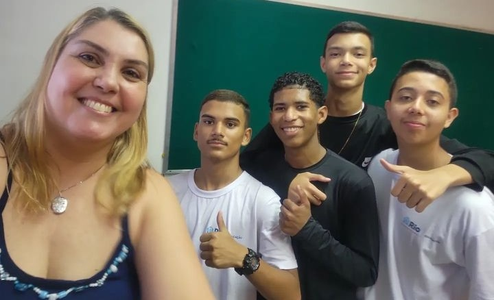
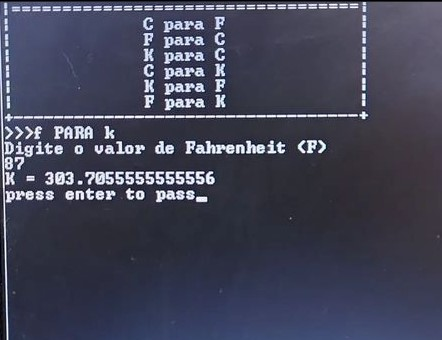
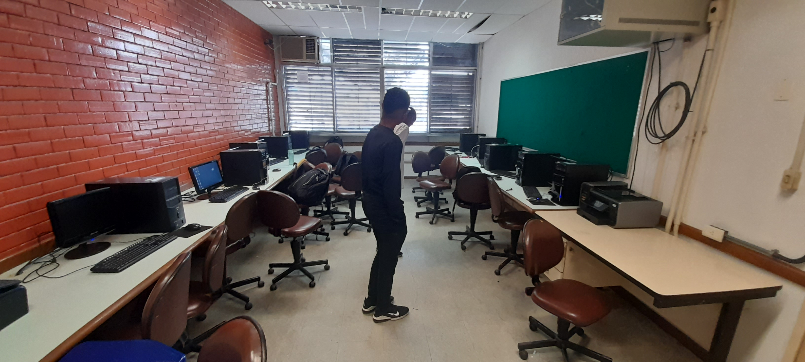
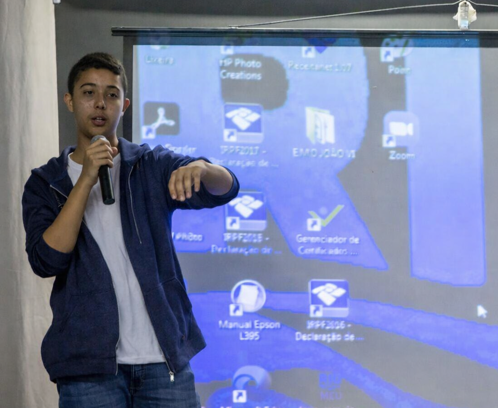
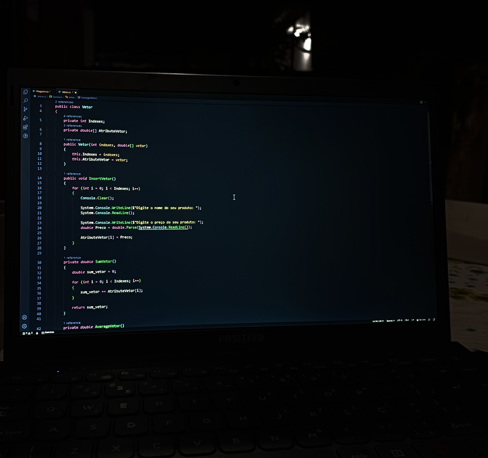
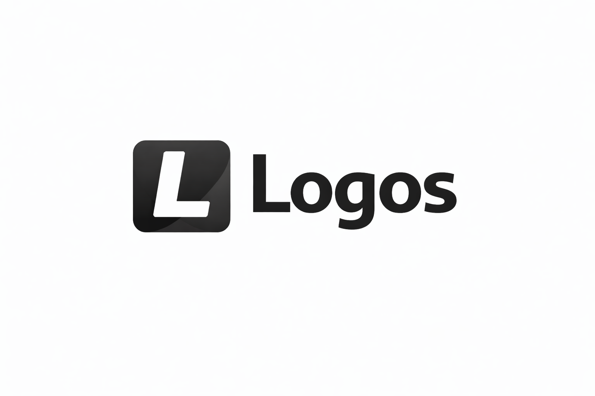

Cada ponto representa uma fase importante da minha jornada.
Desde cedo tive interesse por tecnologia, lógica e criação. Sempre gostei de entender como as coisas funcionam. E no ano de 2022, em uma apresentação escolar criei meu primeiro projeto em Python. Depois comecei a desenvolver sistemas para melhorar a eficiência de cadastro de alunos da diretoria.


Para ser uma forma de eu mesmo consolidar o que aprendia, passei a dar aulas e palestras sobre desenvolvimento, na sala de informática nos tempos vagos da escola. Aquilo que eu aprendia em Python passava adiante para meus colegas. Assim, o conhecimento era distibuido para todos de uma forma boa.


Continuei estudando até perceber que o nível de sistemas que eu queria construir em Python exigia mais robustez. Migrei para o .NET, onde desenvolvi meus primeiros projetos reais, aprendi POO, SOLID e boas práticas de arquitetura. Também subi meus primeiros servidores com ASP.NET e Docker, dando meus primeiros passos em produção e infraestrutura real.

Na Máxima Inventários, trabalhei com sistemas reais em produção, lidando com código legado, correções, melhorias e desenvolvimento de novas funcionalidades em .NET e APIs REST. Essa experiência fortaleceu minha visão sobre qualidade, manutenção e responsabilidade em software. Em paralelo, criei a Psalms, uma organização no GitHub focada em desenvolver bibliotecas para o ecossistema .NET, reduzindo boilerplate, automatizando autenticação e aplicando boas práticas em microservices.
Meu objetivo é voltar ao mercado, enfrentando desafios maiores e evoluindo como desenvolvedor. Busco contribuir em projetos com impacto, aprender com profissionais experientes e entregar soluções de alto nível. Paralelamente, desenvolvo a Logos, um sistema de gestão comercial em .NET focado em estoque, vendas, PDV, dashboards e APIs, aplicando na prática princípios de arquitetura, escalabilidade e qualidade de software.
